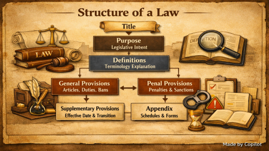

법령형식의 시멘틱 스타일링 적용 계획

✦ 요약설명 ✦
헌법·법령·규칙 등 법령형식 콘텐츠의 시멘틱 및 스타일 기준을 마련하여, 검색 용이성 및 가독성 향상시키고, 법령을 소스로 하는 콘텐츠 생성 기반 마련 및 대규모 프로젝트에서의 구조의 일관성을 유지할 수 있는 경험을 축적하고자 함.
1. 목적
- 법령을 소스로 하는 콘탠츠의 검색 용이성 및 가독성 향상을 위해, 시멘틱 및 스타일 기준 마련
2. 추진배경
- 헌법·법령·규칙 등 법령의 형식을 갖춘 자료를 콘텐츠의 소스로 사용하게 될 경우, 문서의 구조적 일관성이 해체되고 기존 스타일 요소와의 충돌 등이 야기
3. 그동안 추진경과
- 베타테스트를 위해 2026. 1. 30. 행정기본법을 소스로 법령 형식의 사용자 SCSS를 실제 법령인 행정기본법에 구현이라는 콘텐츠를 생성
4. 주요방침
- html 문서 구조의 명확화에 중점을 둔 시멘틱 요소의 사용
- 가독성 향상에 주안점을 둔 스타일 요소의 최소 기준 마련
- 유지보수를 위해 구조나 디자인의 영향을 미치지 없는 미세조정 지양
5. 세부기준
세부 기준 마련에 국가법령정보센터에 게시된 법령 구조와 형식을 참고하였고, 제시되지 않은 스타일은 hugo 테마의 기본 설정 사용
5.1. 법령명의 시멘틱 처리
- (현황) 법령을 블로그 포스트와 같은 콘텐츠의 소스로 사용시, 포스트 제목과 법령명의 두 헤딩이 존재
- (문제점) 콘텐츠의 제목과 법령명이 H1 요소를 두고 경쟁
- (대안) 법령명에 해딩 요소로 ##(H2)를 적용하고, 포스트 제목에 법령명을 함께 병기
5.2. 조문구조(편·장·절·관)의 시멘틱 처리
- (현황) 조문이 많아져 분류가 필요한 경우, 범위가 큰 순으로 편·장·절·관의 조문구조 사용
- (문제점) 모든 법령에 편·장·절·관의 구조가 존재하지 않아, H요소 사용에 대한 규칙 필요
- (대안) 헤딩 요소로 “장"에 ###(H3), “절"에 ####(H4), “관"에 #####(H5)를 지정
- 분류를 위한 조문구조의 신설 순서는 장→절→관으로, 장이 없는 경우 절 또는 관이, 절이 없는 경우 관이 생성되지 않기에 H3에서 H5까지 순차적으로 이어지는 시멘틱 체계에 적합
- 민법과 같이 분량이 많아 “편"을 둔 법령은 현실적으로 블로그 한 포스트에 다 담기에는 한계가 있어, 콘텐츠 수준에서 ‘민법 제2편 물권의 시멘틱 요소 적용’ 처럼 분할하여 콘텐츠 활용
5.3. 조·항·호·목의 문단구조 스타일 처리
| 구분 | 조 | 항 | 호 | 목 | 세목 |
|---|---|---|---|---|---|
| 본문배치 | 0 | +1 | +1 | +2 | +3 |
| 내어쓰기 | 유 | 무 | 유 | 유 | 무 |
| left-margin | 0 | 0 | 1 | 2 | 2 |
| text-indent | -1 | 0 | -1 | -1 | 0 |
5.4. 기타
- 부칙명은 조문구조와 분리하기 위해 시멘틱 요소는 제외하되 가독성 지원을 위해 스타일 요소를 적용하고, 부칙내용은 “조"에 준하여 처리
- strong 태그를 활용한 “조번호(조제목)”, 부칙명 등 중요항목 표시로 검색 성능 및 가독성 향상
- 헌법 전문(前文) 처럼 구조적으로 특별히 취급되나 법령 형식의 일관된 요소가 아닌 경우, 시멘틱 요소보다는 스타일 요소 적용
6. 추진일정
| 구분 | ~ 2월 1주차 | ~ 2월 4주차 | ~ 3월 2주차 | ~ 3월 4주차 |
|---|---|---|---|---|
| 법령 소스 및 테스트용 포스트 준비 |
⚫ | |||
| 국가법령정보센터 소스 검토 | ⚫ | |||
| SCSS 소스 테스트 | ⚫ | |||
| 소스 적용 및 문서화 | ⚫ |
7. 기대효과
- 법령을 소스로 하는 콘텐츠 생성 기반 마련
- SCSS 활용을 통해 대규모 프로젝트에서도 구조의 일관성을 유지할 수 있는 경험 축적
8. 향후계획
- 별도의 결과 리포트 없이, 시멘틱 요소와 SCSS를 소스에 바로 적용하여 베타테스트를 진행하고, 이를 법령형식의 시멘틱 스타일링을 실제 법령인 행정기본법에 구현 포스트로 대체
- 법령 콘텐츠 생성시, 본 계획을 통해 작성된 사용자SCSS를 적용